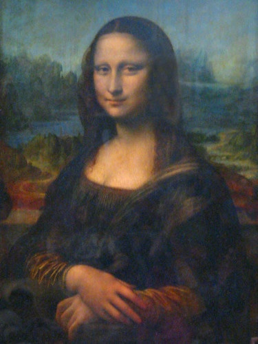

Leonardo da Vinci was born on April 15, 1452. When he was born, both of his parents were unmarried. Leonardo grew up on his father’s family’s estate, and got usual elementary education. Leonardo did not seriously study latin, and did not apply himself to higher mathematics like geometry and arithmetic until he was 30. Leonardo learned how to paint and sculpt as well as the technical-mechanical arts all in a workshop. In 1472 He was accepted to the painters' guild of Florence, but he remained in his teacher’s workshop for five more years.
In 1482 Leonardo moved to Milan to work in the service of the city’s duke. He spent 17 years in Milan, until Ludovico’s fall from power in 1499. He was constantly kept busy as a painter and sculptor and as a designer of court festivals. In December 1499, shortly after the entry of the French into Milan, Leonardo left the city. After visiting Mantua in February 1500, in March he proceeded to Venice. From Venice he finally returned back to Florence, where the people were happy to see him.
In Cesena in 1502, Leonardo entered the service of Cesare Borgia, the son of Pope Alexander VI, as a military architect and engineer and travelling throughout Italy. Leonardo had left Borgia's service and returned to Florence again by early 1503. By this same month, Leonardo had begun working on a portrait of Lisa del Giocondo, the model for the Mona Lisa, which he would continue working on until his twilight years. The Mona Lisa was one of his most famous and recognizable paintings. Leonardo was also free to pursue his scientific interests. Many of Leonardo's most prominent pupils either knew or worked with him in Milan.
From September 1513 to 1516, Leonardo spent much of his time living in the Belvedere Courtyard in the Apostolic Palace, where Michelangelo and Raphael were both active. The pope gave him a painting commission of unknown subject matter, but cancelled it when the artist set about developing a new kind of varnish. Leonardo became ill, in what may have been the first of multiple strokes leading to his death on May 2nd, 1519.